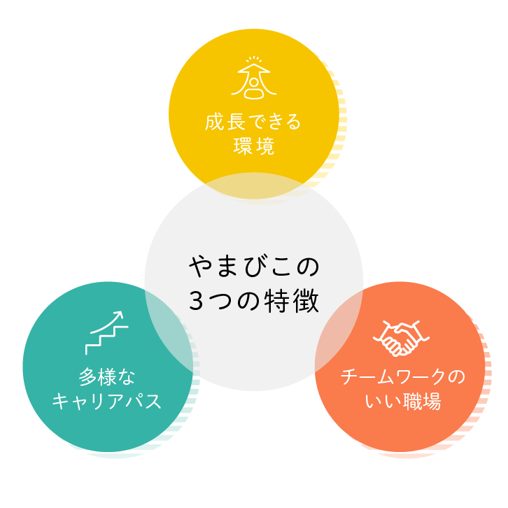

Aboutやまびこグループについて
やまびこグループは、2010年に新横浜駅前で「新横浜整形外科リウマチ科」を開院して以来、神奈川・東京エリアで地域に寄り添った医療を提供してきました。
整形外科を主体に、リハビリテーション医療にも力を入れ、「切らずに治す」ことを大切にした丁寧な診療を行っています。
また、医学研究会の開催などを通じて地域医療の発展にも取り組んでいます。
患者様・利用者様の心に寄り添いながら、より良い医療とサービスを提供するため、私たちは心豊かな職員の育成にも力を注いでいます。

Staff Voices働くスタッフの声


Appealやまびこで働く3つの魅力

整形外科の専門性が自然と身につく、学べる環境
やまびこグループは、整形外科を中心にリハビリテーション医療や画像診断に力を入れています。
医師・PT・柔整・看護師・放射線技師・医療事務が近い距離で連携しているため、 日々の業務の中で「痛みの原因を見極める力」や「評価力」が自然と身につく環境です。
- 保存療法を大切にした丁寧な診療
- 画像診断を活かした根拠ある治療
- 多職種での連携が強く、学びやすい
「整形外科をしっかり学びたい」「専門性を伸ばしたい」方にとって、成長できる土台があります。
チームワークがいいから、気持ちよく安心して働ける職場
やまびこグループの一番の特徴は、職種を超えて助け合う雰囲気の良さです。
困っているスタッフを自然にフォローし合う文化が根づいており、新人でもすぐに馴染める環境があります。
- 新人を孤立させないサポート体制
- 院長・管理者との距離が近く相談しやすい
- 多職種でのコミュニケーションが活発
- 患者様に寄り添う「心のある医療」を大切にしている
入職時に不安に感じやすい「人間関係」や「雰囲気」の面で、安心して働ける環境が整っています。
キャリアの幅が広がる、多施設展開の安定した法人
やまびこグループは複数の整形外科クリニックを展開しており、働き方やキャリアの選択肢が多いことも大きな魅力です。
- ライフステージに合わせた働き方の調整が可能
- 他院との連携で学べる機会が多い
- 管理職・専門職など多様なキャリアパス
- 多院展開、グループ経営による安定した経営基盤
「長く働ける場所を探している」「キャリアの幅を広げたい」方にとって、 安心して成長できる環境が整っています。
Job seeker profile求める人物像
- 自ら「考え」、「学び」、「実行する」。常に向上心を持ち、企業全体の活性を生み出せる方
- 患者様・スタッフを大事にし、また自らも明るく前向きに働ける方
- 「おごらず」「いばらず」常に謙虚な姿勢で、チームワークを大切にする方
- 失敗や困難にもくじけず仕事に取り組める方
- 環境・社会の変化にも対応し、常に研究心・探求心を持って働ける方
YAMABIKO in Numbers数字で見るやまびこ
やまびこグループで働くスタッフの働き方や職場環境を、さまざまな数字でご紹介します。
正規社員契約継続率
離職率 11%
全社員有給年内利用率
未使用 18%
年齢構成
- 20代 20%
- 30代 30%
- 40代 25%
- 50代 15%
- 60代 10%
6h
平均残業時間（月）
34歳
平均年齢
120名
従業員数
128日
年間休日
Benefits福利厚生
-
医療費補助
グループ内クリニックでの保険診療の診療代が無料
-
健康診断・予防接種
年1回の健康診断や各種ワクチン接種を実施
-
資格取得支援
スキルアップのための資格取得を応援
-
社会保険完備
各種保険を完備
-
交通費支給
通勤にかかる交通費を支給
-
福利厚生アプリ
毎日の歩数に応じて景品がもらえるアプリが利用可能
-
育児・産休制度
ライフステージに応じた働き方を支援
-
介護休暇
ご家族の介護が必要な場合も安心
-
制服貸与
業務に必要な制服を貸与
-
社内設備
自販機などを割引価格で利用可能
-
フリードリンク
コーヒーやスープを自由に利用可能
-
社内イベント
忘年会などの社内交流イベント
あなたも、地域医療を支える仲間に。
やまびこグループでは、地域医療を支える仲間を募集しています。
見学や説明会の参加も歓迎しておりますので、お気軽にお問い合わせください。